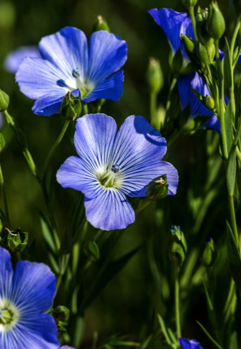

Linas

Linas (Linum) yra lininių (Linaceae) šeimos augalas, kuris dažniausiai auginamas dėl savo pluošto ir sėklų. Tai vienmetis augalas, kuris žydi birželio-liepos mėnesiais. Lino žiedai yra mėlyni, kartais balti arba rožiniai, ir jie suteikia laukams gražų, švelnų atspalvį.